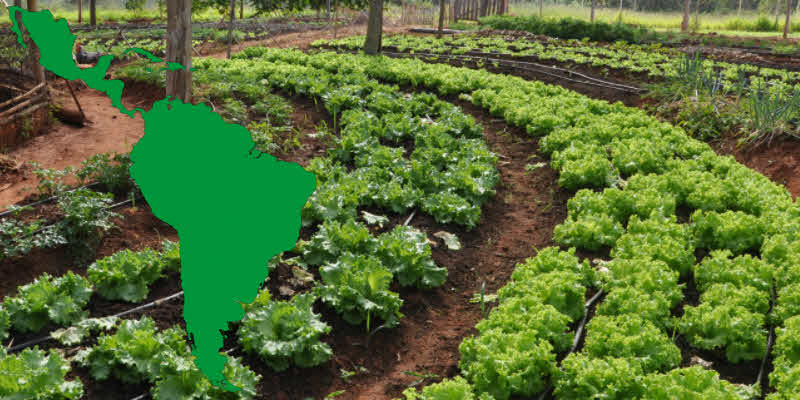

Evolución del aporte de la agricultura al PIB en distintos países.
Author
Franchesca Moraga
Published
Invalid Date
1 Introducción
La agricultura ha sido históricamente una de las actividades económicas fundamentales en muchas regiones del mundo. En países en desarrollo, especialmente en América Latina, el sector agrícola no solo ha representado una fuente importante de empleo, sino también un componente esencial del Producto Interno Bruto (PIB). Este sector ha sido clave para garantizar la seguridad alimentaria, promover la estabilidad social y contribuir a la generación de divisas mediante la exportación de productos agrícolas.
Sin embargo, con el paso del tiempo, muchos países han experimentado procesos de transformación económica que han modificado significativamente la participación relativa de este sector en sus economías. El crecimiento industrial, la urbanización acelerada y el auge de los servicios han desplazado, en muchos casos, la importancia del sector agrícola. A pesar de esto, la agricultura sigue siendo vital en términos de generación de empleo rural y desarrollo regional.

Análisis y perspectivas de la agricultura en América Latina
Este sitio presenta un análisis exploratorio sobre la evolución del aporte del sector agrícola al PIB en distintos países entre 1960 y 2020. Para ello, se utiliza un conjunto de datos proporcionado por el Banco Mundial, obtenido a través de la plataforma Kaggle. El enfoque se centra en países de América Latina, como Costa Rica, Nicaragua, Guatemala, El Salvador y Panamá, con el objetivo de comparar sus trayectorias económicas en relación con la participación del sector agrícola.
Este análisis busca entender mejor cómo se han comportado estos países a lo largo del tiempo en cuanto al peso que el sector agrícola representa dentro de sus economías. Entre las principales preguntas que se plantean destacan: ¿cómo ha cambiado el peso relativo del sector agrícola en la economía costarricense?, ¿existen patrones similares entre los países de la región?, ¿qué factores podrían estar detrás de estos cambios?
1.1 El estudio de estos cambios es importante, ya que permite identificar tendencias que podrían estar relacionadas con la diversificación económica, el desarrollo tecnológico, las políticas públicas, o incluso con fenómenos sociales y ambientales que afectan al sector agrícola.
2 Conjunto de datos
2.1 Descripción general
El conjunto de datos fue publicado por el Banco Mundial y contiene estadísticas anuales sobre el porcentaje del PIB que corresponde al sector agrícola en más de 200 países. La cobertura temporal va desde el año 1960 hasta 2020, y los datos están expresados en porcentajes anuales del PIB.
Las columnas principales del conjunto de datos son:
Country Name: nombre del país.
Country Code: código estándar de tres letras.
Indicator Name: nombre del indicador.
Indicator Code: código del indicador.
Años: una columna para cada año desde 1960 hasta 2020 con el valor del indicador (porcentaje del PIB).
Para este proyecto, se seleccionaron cinco países de América Central y se reestructuraron los datos al formato largo con el fin de facilitar su análisis y visualización.
3 Problemas o preguntas a investigar
A través del análisis de estos datos, se espera responder las siguientes preguntas:
¿Ha aumentado o disminuido el aporte de la agricultura al PIB en los países seleccionados?
¿Qué países muestran tendencias similares en este indicador?
¿Hay periodos donde los cambios son especialmente marcados?
¿Se observan diferencias estructurales entre países de la región?
4 Visualizaciones interactivas
4.1 Gráfico 1: Evolución histórica del aporte agrícola
Este gráfico muestra la evolución del porcentaje del PIB agrícola en los cinco países seleccionados. Permite observar cómo ha cambiado la participación del sector agrícola en el tiempo.
Code
library(tidyverse)
── Attaching core tidyverse packages ──────────────────────── tidyverse 2.0.0 ──
✔ dplyr 1.1.4 ✔ readr 2.1.5
✔ forcats 1.0.0 ✔ stringr 1.5.1
✔ ggplot2 3.5.1 ✔ tibble 3.2.1
✔ lubridate 1.9.3 ✔ tidyr 1.3.1
✔ purrr 1.0.2
── Conflicts ────────────────────────────────────────── tidyverse_conflicts() ──
✖ dplyr::filter() masks stats::filter()
✖ dplyr::lag() masks stats::lag()
ℹ Use the conflicted package (<http://conflicted.r-lib.org/>) to force all conflicts to become errors
Code
library(plotly)
Attaching package: 'plotly'
The following object is masked from 'package:ggplot2':
last_plot
The following object is masked from 'package:stats':
filter
The following object is masked from 'package:graphics':
layout
Code
# Cargar los datos preparados previamentedatos <-read_csv("API_NV.AGR.TOTL.ZS_DS2_en_csv_v2_85254.csv", skip =4)
New names:
Rows: 266 Columns: 70
── Column specification
──────────────────────────────────────────────────────── Delimiter: "," chr
(4): Country Name, Country Code, Indicator Name, Indicator Code dbl (64): 1960,
1961, 1962, 1963, 1964, 1965, 1966, 1967, 1968, 1969, 1970, ... lgl (2): 2024,
...70
ℹ Use `spec()` to retrieve the full column specification for this data. ℹ
Specify the column types or set `show_col_types = FALSE` to quiet this message.
• `` -> `...70`
Code
# Seleccionar países de Centroaméricapaises <-c("Costa Rica", "Nicaragua", "Guatemala", "El Salvador", "Panama")# Filtrar solo esos países y seleccionar columnas relevantesdatos_filtrados <- datos |>filter(`Country Name`%in% paises) |>select(`Country Name`, matches("^\\d{4}$")) # Años# Reorganizar datos de ancho a largodatos_largos <- datos_filtrados|>pivot_longer(-`Country Name`, names_to ="Año", values_to ="Porcentaje") |>mutate(Año =as.integer(Año))
Code
# Gráfico con ggplot2grafico1 <-ggplot(datos_largos, aes(x = Año, y = Porcentaje, color =`Country Name`)) +geom_line(size =1.1) +labs(title ="Participación del sector agrícola en el PIB",x ="Año",y ="% del PIB",color ="País" ) +theme_minimal()
Warning: Using `size` aesthetic for lines was deprecated in ggplot2 3.4.0.
ℹ Please use `linewidth` instead.
Code
# Convertir en interactivo con plotlyggplotly(grafico1)
Evolución del aporte de la agricultura al PIB (1960-2020)
Este gráfico muestra cómo ha evolucionado el porcentaje del PIB aportado por la agricultura entre 1960 y 2020 en cinco países de Centroamérica. Como se puede observar, en la mayoría de ellos ha habido una tendencia decreciente, lo cual indica una posible diversificación de las economías hacia sectores no agrícolas.
4.2 Comparación en un año específico
Code
# Datos para un año específicodatos_1990 <- datos_largos |>filter(Año ==1990)plot_ly(datos_1990,x =~`Country Name`,y =~Porcentaje,type ="bar",color =~`Country Name`) |>layout(title ="Porcentaje del PIB agrícola por país en 1990",xaxis =list(title ="País"),yaxis =list(title ="% del PIB agrícola") )
Warning: Ignoring 1 observations
Porcentaje del PIB agrícola por país en 1990
Este gráfico de barras muestra el valor porcentual del PIB agrícola en el año 1990. Se puede observar que Nicaragua y Guatemala presentaban niveles más altos que Panamá o Costa Rica. Esta diferencia podría estar relacionada con el grado de industrialización y urbanización que experimentaba cada país.